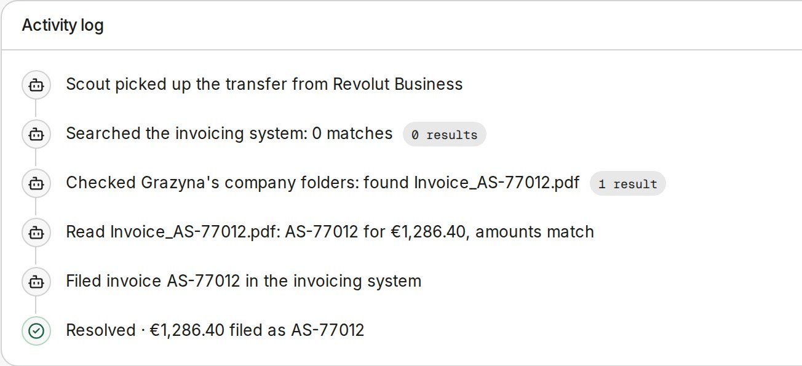
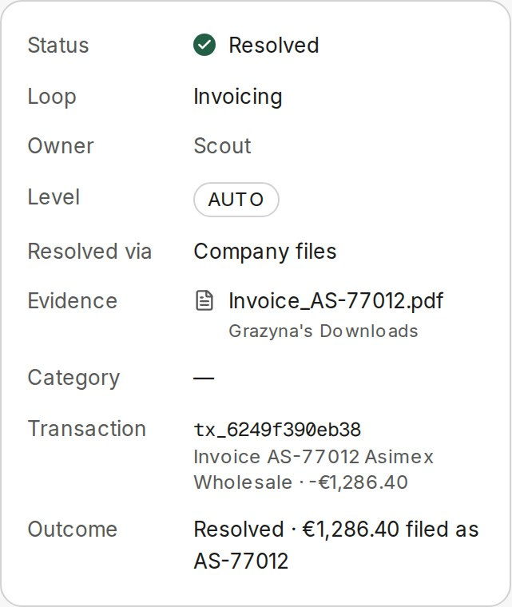
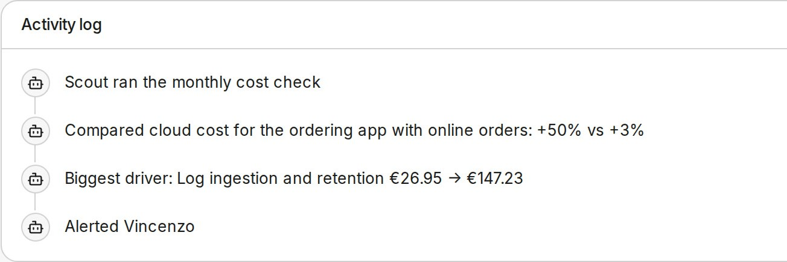
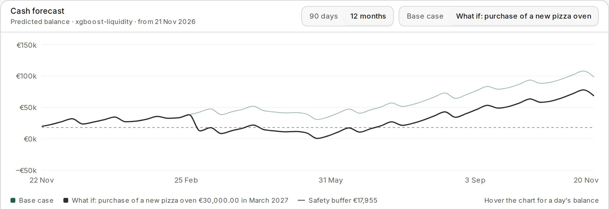
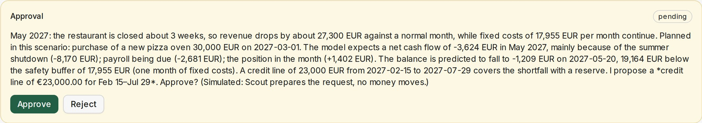
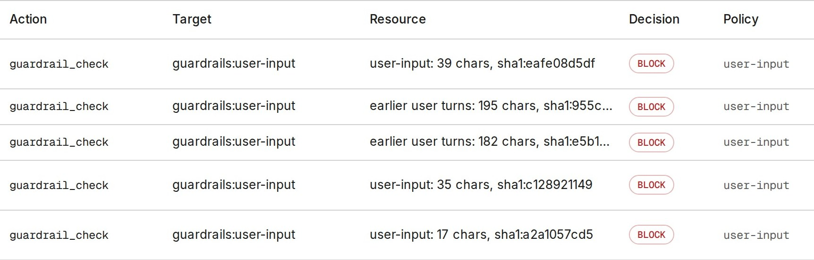
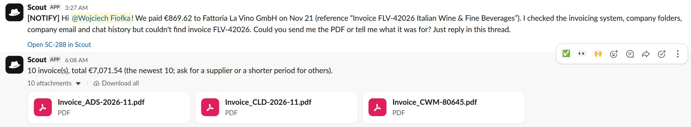

The AI CFO for small business
The problem
A payment went out. The statement does not say why.
No invoice on file matches the payment.
The national e-invoice register is one more place to check.
Someone explained it once, in a thread.
The PDF sits in an employee’s Downloads folder.
A paid transfer with no document on file.
The cloud bill grows and nobody compares it with orders.
Cash for next summer is a guess.
The solution
01
the missing invoice, wherever it is hiding.
02
cost spikes that orders do not explain.
03
the owner before anything that matters.
04
every message, tool result and reply.
An open-weights model on Red Hat OpenShift AI. Company data stays on the cluster.
The owner stays in control
Matching, searching, filing.
Alerts with the reason attached.
Decisions that matter, like a credit line. Scout pauses until the owner answers.
The bank request is prepared and logged. In this prototype no transfer is sent.
Live app, real screens
Verb 1of 4
Finds.
A payment of €1,286.40 left the account and no invoice matched it. Scout searched the office manager’s company folders, found the PDF, checked the amount and filed it.
AUTONobody had to do anything.


Task SC-101 · Pizzeria Amalfi demo workspace · files reached through MCP
Verb 2of 4
Flags.
The cloud bill for the ordering app rose by half in a month. Orders barely moved. Scout compared the two, named the line that grew, and told the owner.
NOTIFYDone, and the owner knows why.
€26.95 → €147.23
€0.88 → €1.28

Verb 3of 4
Asks.
The owner types: what if we buy a €30,000 pizza oven in March? Scout forecasts the cash, sees it fall below the safety buffer, and explains the dip before it proposes anything.
APPROVALScout stops here.

XGBoost forecast, tracked in MLflow · reasons from SHAP · numbers as Scout stated them in the approval
Verb 3of 4 · the answer

APPROVALSIMULATED
The request is prepared for the owner and the decision is in the audit log.
Verb 4of 4
Guards.
NeMo Guardrails check every message, every tool result and every reply. A poisoned invoice is a tool result, so it gets its own check. Blocks land in the audit log.
26 / 26demo-kit checks, verdict as expected.

Salary access by role, the approval gate and audit logging do not depend on a model.
Three configs: user input, tool result, bot output. If NeMo is down, Scout lets messages through and logs it.
Innovations for all generations

A direct message, or the chat in the dashboard.
Every place it already looked, before it bothers anyone.
Send the PDF or say what it was for, in the same thread.
Behind the build
Slack · dashboard chat
bank API (mock)
KSeF 2.0 (test env)
Slack
Red Hat OpenShift AI one node · one NVIDIA L4
Project · Scout
Next.js
FastAPI
LangGraph agent, pauses for approval
company DB · workstations · HR
TrustyAI resource, 3 configs
XGBoost + SHAP
invoices · tasks · audit
one trace per agent event · agent evaluation · forecast runs
Project · model
vLLM
KServe InferenceService
tool calling on
cluster network only
Results
Expected verdict against live NeMo.
Run with the real Granite model.
A few failures remain; they also fail on unchanged main.
Our forecast on 2025 data, before and after.
The bank is a mock API and no money moves. KSeF runs on the Ministry’s test environment. Email is not connected in the demo workspace.
On a public two-year retail series the same forecast method lost to a calendar-only model. We report that.
Scout · the AI CFO for small business
Wojciech FiołkaPiotr WarząchowskiPaweł KojmaGrzegorz Kodrzycki